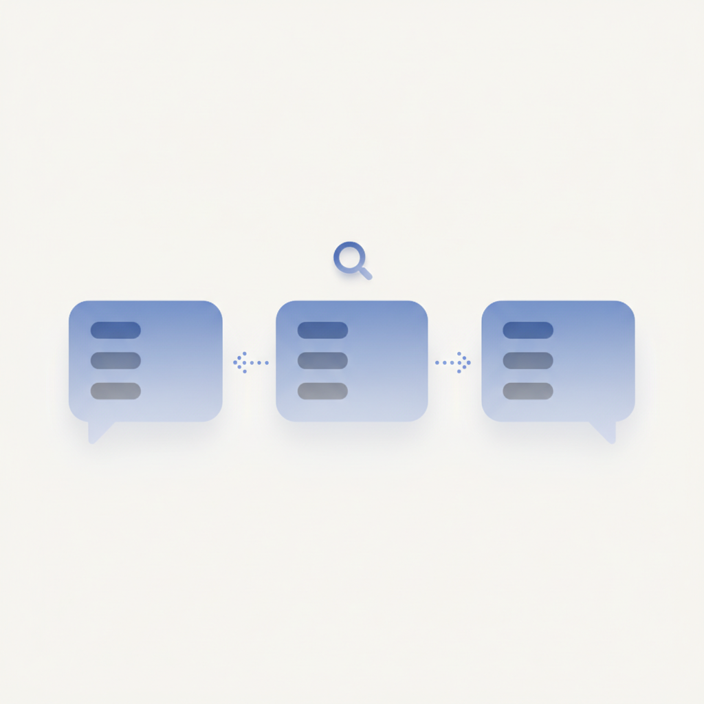
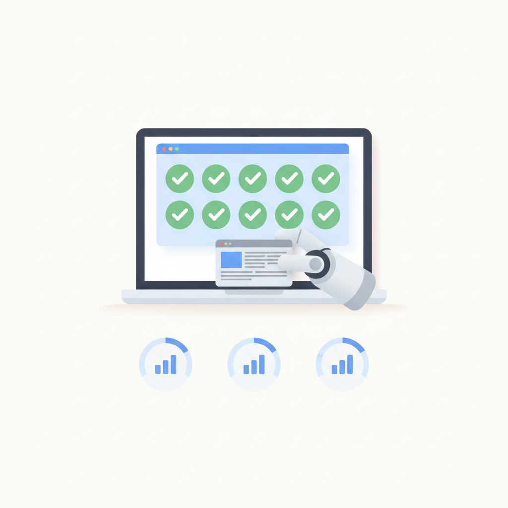
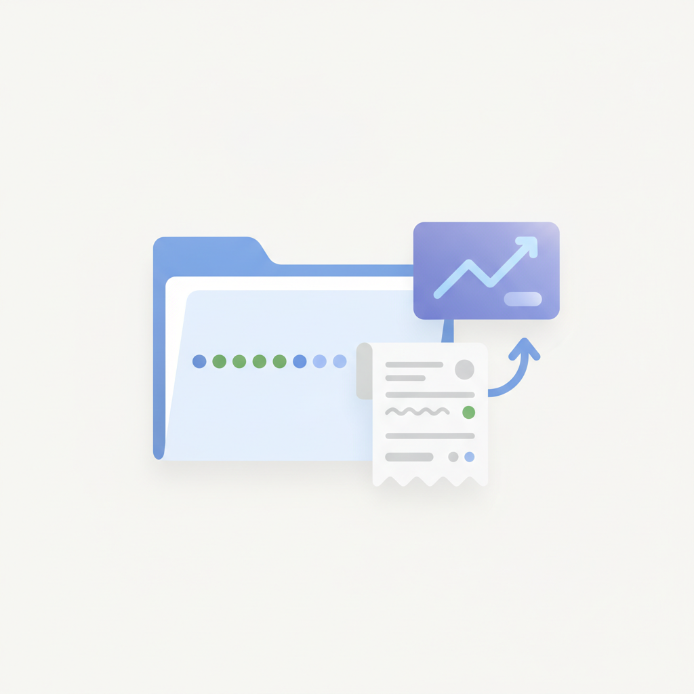
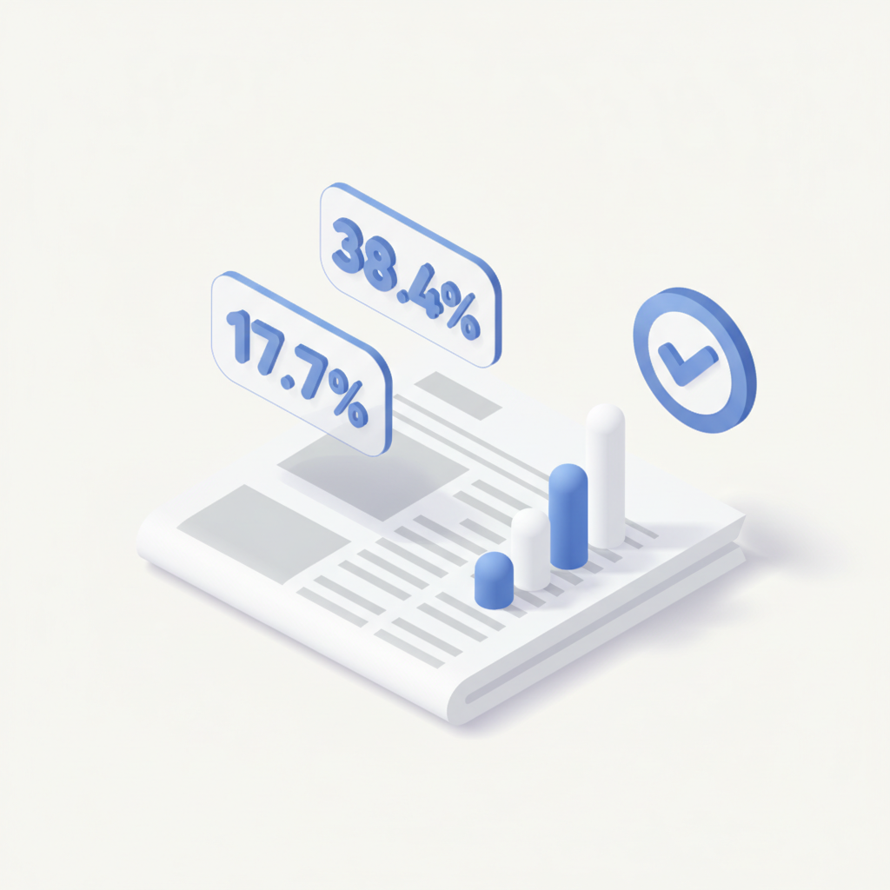
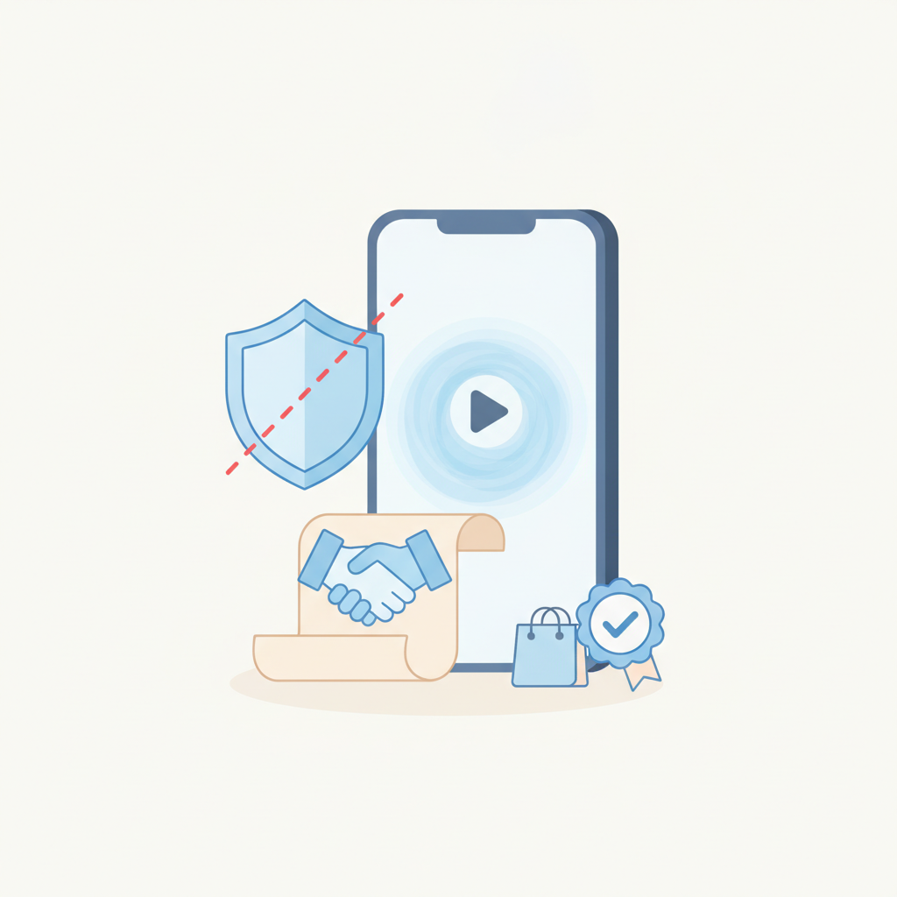
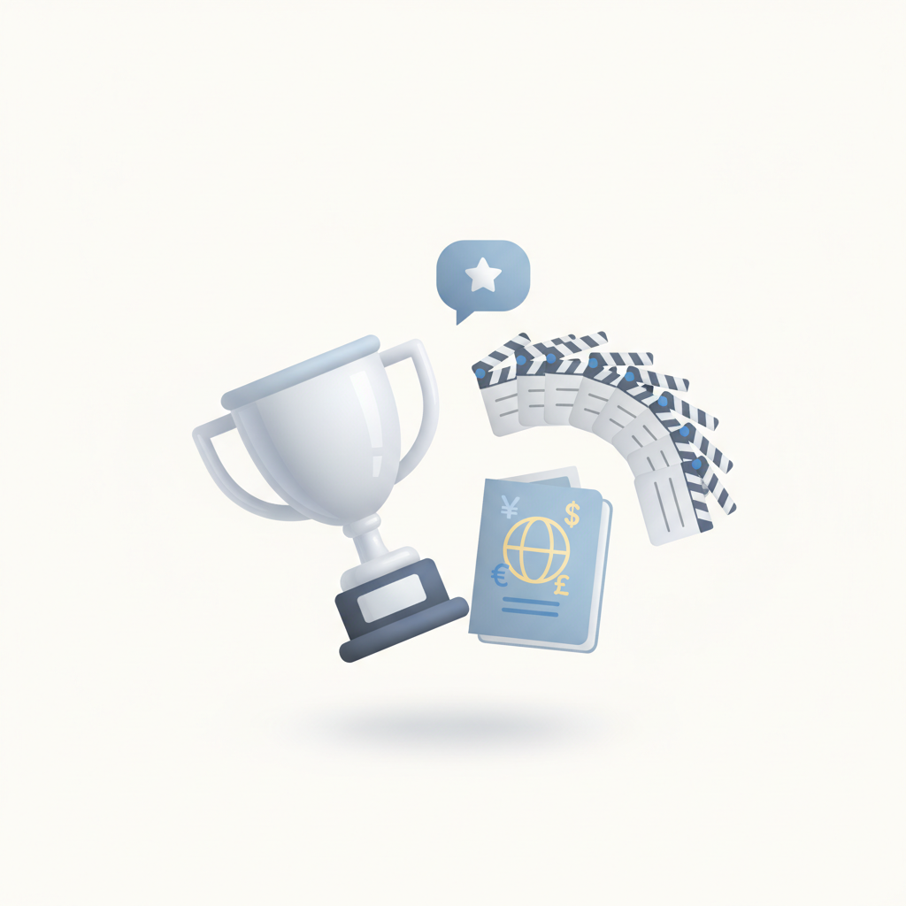
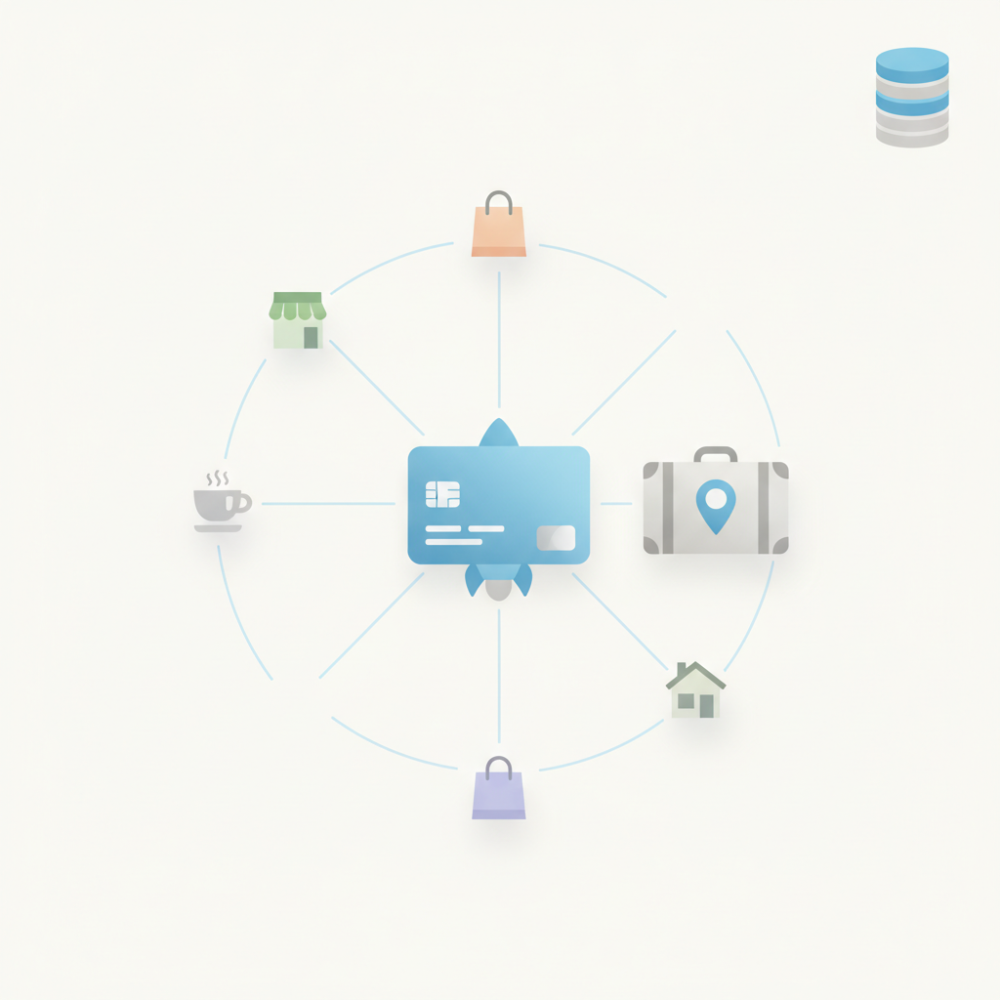

안녕하세요! 월요일 마케팅 소식 전해드립니다 😊 오늘은 GEO(Generative Engine Optimization) 이야기가 단연 화제입니다. 브랜딥이 챗GPT·퍼플렉시티·제미나이를 대상으로 18개 소비재 카테고리의 브랜드 추천 현황을 분석한 결과, AI 엔진마다 추천 순위가 제각각이라는 사실이 확인됐습니다. 같은 브랜드도 어떤 AI에서는 상위에 오르고 다른 AI에서는 아예 언급조차 되지 않는다면, SEO 전략과는 결이 다른 접근이 필요하다는 뜻입니다. 파이온코퍼레이션이 Google AI 개요·네이버 AI 브리핑 대응을 통합한 'VCAT GEO 에이전트'를 출시한 것도 같은 맥락에서 읽힙니다. AI 검색이 브랜드 노출의 새로운 관문이 되고 있는 지금, GEO를 전략 안에 어떻게 자리매김할지를 구체적으로 고민할 시점입니다.
퍼포먼스 마케팅 측면에서도 짚어둘 내용이 있습니다. 서치엔진랜드는 개별 전환 데이터만으로는 고객의 실제 가치를 제대로 파악하기 어렵다고 강조합니다. 같은 구매 금액이라도 신규 고객인지 재구매 고객인지에 따라 마케팅적 의미가 완전히 달라지는데, 고객 이력과 맥락을 함께 봐야 타기팅과 예산 배분의 정확도가 높아진다는 논지입니다. 전환 수치 뒤에 숨은 고객의 여정을 얼마나 입체적으로 읽어내느냐가 퍼포먼스 마케팅의 다음 단계가 되고 있습니다.
카카오페이 '심은자 캠페인'의 에피어워드 코리아 실버 수상 소식도 반갑습니다. 배우 심은경의 부캐를 활용해 해외결제라는 다소 건조한 금융 서비스를 유머와 캐릭터로 풀어낸 접근은, 브랜드 메시지를 소비자가 자연스럽게 공유하고 싶은 콘텐츠로 전환하는 데 성공한 사례입니다. 월요일 힘차게 출발하시고, 이번 주도 좋은 인사이트 가득 챙겨가시길 바랍니다! 🚀

1브랜드 추천 측정 플랫폼 브랜딥이 2026년 3분기 18개 소비재 카테고리를 대상으로 챗GPT·퍼플렉시티·제미나이 세 엔진의 브랜드 추천 현황을 실측한 결과, AI 엔진마다 추천 브랜드와 순위가 상이하게 나타났다. 소비자가 검색창 대신 생성형 AI에 제품을 묻는 비율이 빠르게 늘면서, 어느 AI에서 어떻게 노출되는지가 새로운 마케팅 과제로 부상하고 있다. 마케터는 SEO를 넘어 AI별 추천 로직에 맞춘 GEO 전략을 별도로 수립할 필요가 있다.
›
2파이온코퍼레이션이 구글 AI 개요·네이버 AI 브리핑 등 AI 검색 환경에 대응하는 'VCAT GEO 에이전트'를 출시했다. 디지털 분석 기업 스파크토로에 따르면 생성형 AI 검색 이용자의 60% 이상이 링크를 클릭하지 않고 탐색을 마치며, 기존 SEO 방식만으로는 트래픽 확보가 어려워지고 있다. 기존 사이트 변경 없이 AI가 콘텐츠를 인식하도록 진단·실행·측정을 통합 제공한다는 점에서, AI 검색 유입 감소를 고민하는 마케터의 대안으로 주목된다.
›
3서치엔진랜드는 개별 거래 데이터만으로는 해당 고객이 마케팅에서 갖는 의미를 제대로 파악하기 어렵다고 강조했다. 같은 구매 금액이라도 신규 고객인지 재구매 고객인지에 따라 마케팅 투자 가치가 크게 달라지기 때문이다. 전환 데이터가 풍부해진 지금일수록, 고객의 구매 이력과 생애가치(LTV)를 함께 고려한 세분화 전략이 퍼포먼스 마케팅의 효율을 높이는 핵심이 된다.
›
4광고 품질 측정 기업 더블베리파이(DoubleVerify)가 12개 광고주의 2026년 상반기 캠페인을 분석한 결과, 뉴스 사이트 광고는 다른 디지털 미디어 대비 CPM이 17.7%, CPC가 38.4% 낮은 것으로 나타났다. 유로뉴스·AP 등 전문 언론사 지면이 노출·클릭·뷰어블 임프레션 모든 지표에서 비용 효율이 높았다. 브랜드 세이프티를 이유로 뉴스 지면을 기피하던 광고주라면 미디어 믹스 재검토의 근거로 삼을 만한 데이터다.
›
5틱톡이 싱가포르 IP 위크에서 한국지식재산보호원과 K-브랜드 보호 및 건전한 전자상거래 생태계 조성을 위한 MOU를 체결했다. 협약은 틱톡샵과 토코피디아를 아우르는 틱톡 커머스 생태계 전반에서 위조상품 유통을 방지하는 내용을 담고 있다. 숏폼·라이브커머스를 통한 거래가 급증하는 가운데, 틱톡에서 브랜드를 운영하는 마케터는 공식 채널과 정품 인증 체계를 강화할 필요가 있다.
›
6PTKOREA가 카카오페이 해외결제 캠페인 '심은자 캠페인'으로 에피어워드 코리아 실버를 수상했다. 배우 심은경의 부캐 '심은자'를 앞세워 'Cash is Uncool' 메시지를 10편 시리즈로 제작했으며, 인스타그램 부캐 계정을 활용한 소셜 중심 집행이 특징이다. 금융 서비스의 해외결제 기능을 캐릭터·부캐 마케팅으로 풀어낸 접근법은 핀테크·이커머스 마케터에게 참고할 사례가 된다.
›
7쿠팡의 범용 간편결제 서비스 '로켓페이'가 여행 플랫폼 마이리얼트립을 첫 외부 가맹점으로 확보하며 쿠팡 생태계 밖으로 확장을 시작했다. 로켓페이가 외부 가맹점을 늘릴수록 쿠팡은 결제 데이터를 기반으로 광고·타겟팅 역량을 강화할 수 있는 기반을 갖추게 된다. 리테일 미디어와 퍼스트파티 데이터 경쟁이 심화되는 상황에서, 쿠팡의 결제 인프라 확장은 광고 플랫폼으로서의 영향력 확대로 이어질 전망이다.
›브랜드 진단부터 지금 당장 해야 할 우선순위까지,
30분 무료 상담에서 함께 정리해드려요.
이미 수십 개 브랜드가 상담받았습니다.
내 브랜드처럼, 함께 고민하는 팀원의 마음으로 봅니다.
스타트업 대표·마케팅 담당자를 위한 30분